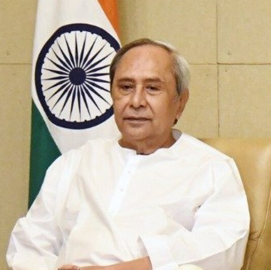
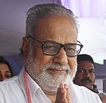
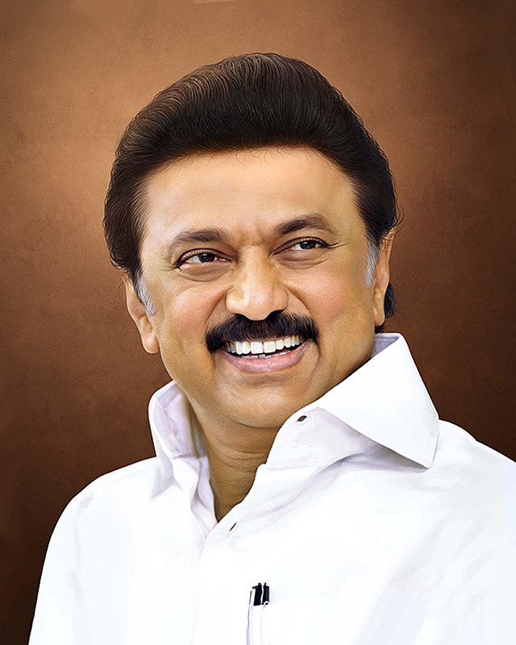
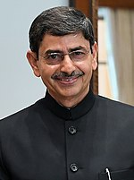
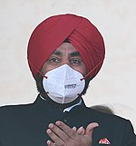

| Sr.No | State Name | Capital | CM of State | Governor of State | ||
|---|---|---|---|---|---|---|
| 1. | Andhra Pradesh | Amarawati | Y.S. Jagan Mohan Reddy | Biswabhusan Harichandan | ||
| 2. | Arunachal Pradesh | Itanagar | B.D. Mishra | Pema Khandu | | |
| 3. | Assam | Dispur | Hemant Bishwa Sarma | Prof. Jagdish Mukhi | | |
| 4. | Bihar | Patna | Nitish Kumar | Phagu Chauhan | ||
| 5. | Chhattisgardh | Raipur | Bhupesh Bhaghel | Anusuiya Uikey | ||
| 6. | Goa | Panji | Pramod Sawant | P.S. Sreedharan Pillai | | |
| 7. | Gujrat | Gandhi Nagar | Shri Bhupendra Patel | Acharya Devvrat | ||
| 8. | Haryana | Chandigarh | Manohar Lal Khattar | Bandaru Dattatreya | | |
| 9. | Himachal Pradesh | Shimala | Jai Ram Thakur | Rajendra Vishwanath Arlekar | | |
| 10. | Jharkhand | Ranchi | Hemant Soren | Shri Ramesh Bais | ||
| 11. | Karnataka | Bengaluru | Basavaraj Somappa Bommai | Thawar Chand Gehlot | ||
| 12. | Kerala | Thiruvananthapuram | Pinarayi Vijayan | Arif Mohammad Khan | ||
| 13. | Madhya Pradesh | Bhopal | Shivraj Singh Chouhan | Mangubhai C. Patel | ||
| 14. | Maharastra | Mumbai | Shri Eknath Shinde | Bhagat Singh Koshyari | ||
| 15. | Manipur | Imphal | Shri N. Biren Singh | La. Ganesan | | |
| 16. | Meghalaya | Shillong | Conrad Kongkal Sangma | Satya Pal Malik | | |
| 17. | Mizoram | Aizawl | Shri Pu Zoramthaga | | Dr. Hari Babu Kambhampati | |
| 18. | Nagaland | Kohima | Shri Neiphiu Rio | Jagdish Mukhi | | |
| 19. | Odisha | Bhuneshwar | Shri Naveen Patnaik |  | Ganeshi Lal |  |
| 20. | Panjab | Chandigarh | Shri Bhagwant Shing Mann | Banwarilal Purohit | | |
| 21. | Rajsthan | Jaipur | Shri Ashok Gehlot | Kalraj Mishra | | |
| 22. | Sikkim | Gangtok | Shri PS Golay | Ganga Prasad | | |
| 23. | Tamilnaddu | Channai | Shri M.K. Stalin |  | R.N. Ravi |  |
| 24. | Telengana | Haidrabad | K. Chandrasekhar Rao | Tamilisai Soundrarajan | ||
| 25. | Tripura | Agartalla | Dr. Manik Saha | Satyadev Narayan Arya | | |
| 26. | Utrakhand | Dehradoon | Pushkar Shing Dhami | Gurmit Singh |  | |
| 27. | Uttar Pradesh | Lucknow | Shri Yogi Aditya Nath | | Anandiben Patel | |
| 28. | West Bangal | Kolkata | Mamata Banerjee | Jagdeep Dhankhar | ||
▬▬▬▬▬▬:)THANK ☻☺☻ YOU(:▬▬▬▬▬▬